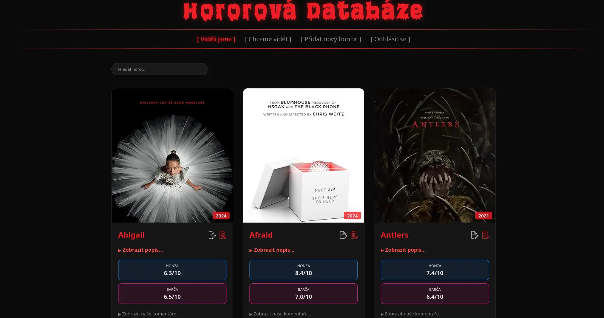
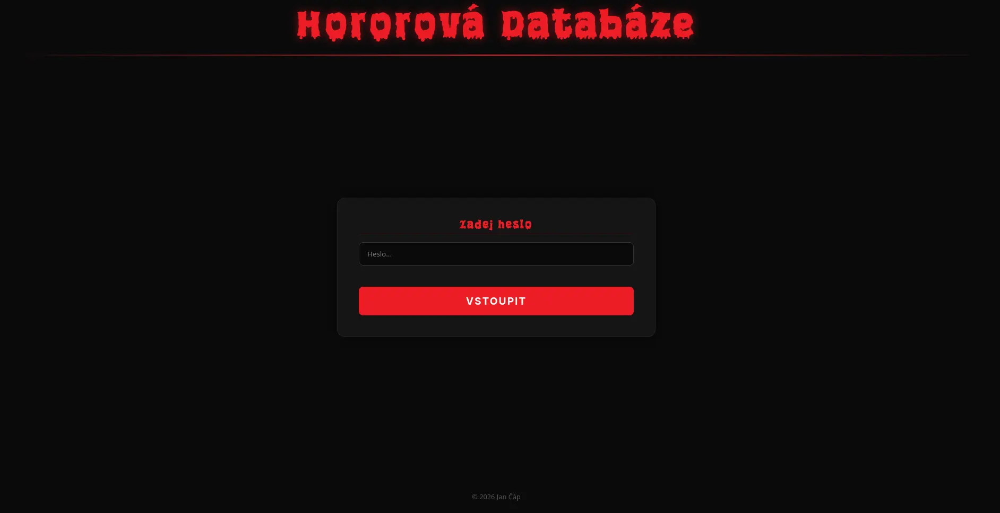
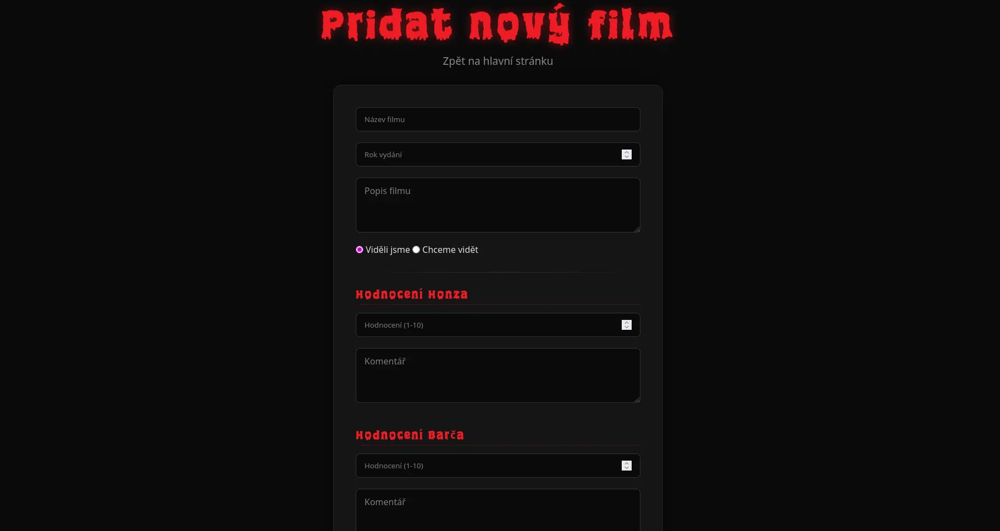

Datum
2026
Další z původně zápočtových projektů, který se vyvinul ve webovou aplikace pro mě a mou přítelkyni. Hororová databáze pro záznam hororů, které jsme již viděli, naše hodnocení a komentáře.

Datum
2026
Kategorie
Vývoj Webu
Technologie
HTML, CSS, JavaScript, PHP, SQL
URL
Hororová Databáze představuje můj první větší krok od statických frontendových stránek k dynamickému backendu. Cílem bylo vytvořit funkční systém pro evidenci a správu sbírky hororových filmů. Aplikace není jen vizuální šablonou, ale reálným nástrojem, který bezpečně komunikuje s databází a zpracovává uživatelské vstupy.
Jádrem projektu je kompletní administrace – od zabezpečeného přihlášení uživatele až po plnohodnotné CRUD operace (vytváření, čtení, úprava a mazání záznamů). Abych aplikaci oživil a zautomatizoval plnění dat, propojil jsem ji s externím OMDb API, které po zadání přesného názvu filmu automaticky stáhne příslušný plakát.


Logika aplikace je napsána v čistém PHP, zatímco data jsou ukládána do relační databáze MySQL. Frontend využívá standardní HTML a CSS, přičemž hlavní důraz byl tentokrát kladen na to, co se děje "pod kapotou" – tedy na správné zpracování dat z formulářů a ochranu proti základním zranitelnostem.
Velkou výzvou bylo napojení na externí OMDb API. Musel jsem implementovat logiku, která si poradí s tím, když API vyžaduje striktně přesný název filmu, a zajistit, aby aplikace nespadla, pokud externí server data nenajde nebo vrátí chybu. To mě donutilo přemýšlet nad ošetřováním chybových stavů v reálném provozu.
Projekt jsem následně nasazoval na univerzitní linuxový server. Během tohoto procesu jsem si musel v praxi osahat práci s terminálem, řešení absolutních a relativních cest v PHP a především správu linuxových přístupových práv k souborům (např. bezpečné nastavení chmod 644 pro soubor s údaji k databázi), aby byl web vůbec funkční a zároveň chráněný.
Tento projekt mi zásadně rozšířil obzory v tom, jak funguje komunikace mezi klientem a serverem. Největší posun pro mě představovalo opuštění bezpečného lokálního prostředí a řešení reálných problémů při nasazování na ostrý linuxový server, kde i špatně nastavená práva souboru znamenají nefunkční web.
Vývoj Hororové Databáze mi potvrdil, že mě baví řešit nejen to, jak web vypadá, ale hlavně to, jak funguje uvnitř. Schopnost postavit si vlastní backend a databázi mi dala obrovskou svobodu pro tvorbu komplexnějších aplikací do budoucna.